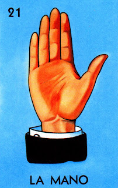

"Con fuerza y determinación, la mano puede crear o destruir."

"The Mano card in Lotería represents action, power, and influence. Depicted as a hand, it symbolizes the ability to shape one's destiny and take control of situations. In Mexican culture, the hand is often seen as a symbol of work, creation, and unity, as it is through our hands that we build, nurture, and express our strength and capabilities."
Regresar